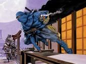
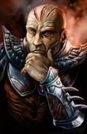

Les Terres de Kirin Tor
Ère du Renouveau [280]
Ère du Conflit [287]
Troisième Ère [406]
Quatrième Ère [334]
Cinquième Ère [187]
Sixième Ère [71]
Lune de la Force [38]
Décade du Panda [16]
[pélléhum] prologue
[b]aujourd'hui j'ai eu 18 ans je quitte la maison pour aller m'installer a oristri l'ile des elfs.ses traverser dureras 30 jour.je devrais traverser les trois foret d'iris fagor le terrain des elfes noir .a 'autre bout de cette foret les montagne désolé de baldriftt , le ro ... Lire la suite >>>[Senseyar] La retraite
[i]"j'ouvre la porte de ma petite maison en Feralas comme d'habitude dans cette petit maison il n'y a que moi et personne d'autre je m'attendais a pouvoir revoir rien qu'une foi ce pauvre Jordansito ,Qu'Elune le garde lui et les autres membres de l'equipage qui ont refuse d' ... Lire la suite >>>[Nectylia] Rose de vie ?
quelque jours avant[Elhoïnah] Songes et murmures
"Nectylia...cette fois ci c'est de trop...je ne te demande pas l'impossible...tuer une personne c'est pas la fin du monde...si tu veux etre reconnue comme ma fille a jamais..."
"Je..je suis désolée..."
"Ne te désole pas et réussi se que je te de ... Lire la suite >>>
Où suis-je ? je ne vois plus rien...suis-je devenue aveugle...Non, je sens un morceau d'étoffe qui me passe devant les yeux.[Senseyar] Une nouvelle inquietante
Mais où est-ce que je suis ?
Je me rapelle juste du combat devant les portes d'Anh Qiraji.
Voila...J'étais sous les ordres d'un connétable, nous ... Lire la suite >>>
Je me dirige comme tout les matins au bastion feathermoon en Feralas pour voir si j'ai du courrier et c'est la que l'aubergiste me dit qu'un courrier officiel venant de Darnassus m'est parvenu le courrier disait[i] "J'ai connu Jordansito bien mieux que n'importe qui,viens me ... Lire la suite >>>[Nectylia] Arwendïl 5em jours
« Nous y sommes Arwen. C'est cet homme que tu dois tuer. »[Nectylia] Sérénity nouvelle rose
« Maisil y'a une femme et des enfants ! Et ils n'ont pas l'air dangereux »
« Ne te fie pas aux apparencesC'est un monstre. Et puis Noir pourrait t'aider »
Lethtendris souriait, elle posa un regard froid sur le ... Lire la suite >>>
(écrit par séré)[Laurëlïn] L'île...
Sérénity n'était pas apparrue depuis plusieurs jours à Stormwind ni à aucun autre endroit qu'elle cotoie d'ordinaire. Cela faisait éxactement 5 jours que personnes n'avait de nouvelles. Même Thörgas n'en avait plus.
Pendant ce temps dans la forêt d'Ashen ... Lire la suite >>>
Elle s'éveilla lentement. De douces effluves de fleurs, de sable et de mer parvinrent jusqu'à ses narines, tandis que les rayons du soleil caressaient son visage délicatement.[Cheena] {Neph'o} Combattante
Elle s'étira, soupirant de bonheur, les yeux toujours clos, ses mains glissant sur les draps de so ... Lire la suite >>>
Tournant la tête à droite et à gauche, Neph'o raffermit sa prise sur son épée. Préparant son bouclier à parer, elle poussa un cri de rage et fondit sur son ennemi. La boule de poils n'eut que le temps de pousser un grognement ... Lire la suite >>>[Nectylia] Etas d'esprit de la rose ArwendI^l
Monstre....je suis un monstre...je tue des innocents juste pour mieux me connaitre.[Thelsian] Apprentissage
La rose...je ne pense plus qu'à elle. Elle monopolise mes pensées, je sais que je joue un jeu dangereux mais je dois tout savoir.
Je me demande ce que devienne les autres...Nectylia, Fingon ... Lire la suite >>>
Les jours passent, les heures s'écoulent dans la balance de la vie. Tout était calme, tout était prenant, il n'était pas rare que l'Elfe se trouvait en méditation, assise souvent dans la pièce chaude, les yeux clos, le visage sévère et songeur. Son Maître était là, avec elle ... Lire la suite >>>[Adalynn / Halaa] souvenirs douloureux
***********[Nectylia] Traque
Le bouclier de lumière ne les protégeraient plus très longtemps, Emerick le savait, autour d'eux le zigourrat n'était plus qu'un amas de gravas et d'energie magique en fusion, ils mourraient dés que la barrière de lumière tomberai.
Le paladin tenait la démonist ... Lire la suite >>>
Shadoryne traque beaucoup trop Sérénity....Et Arwendil se prend aux jeu ...[Elethir Menefaë] [Elethir] Avant dernier fils des Menefaë
Nectylia était de moins en moins vue a la citée .
Ses amis n'avaient ils rien remarqué ?
Avaient - ils seulement fait attention a son étas actuel ?
Il faut dire qu'elle osait plus vraiment ce m ... Lire la suite >>>
Elethir essayait de se maintenir aussi droit que possible, et se pliait autant qu'il en était capable aux conseils qu'Ethyenelle lui murmurait. D'une allure aussi altière qu'il le pouvait et avec un air dédaigneux peint sur le visag ... Lire la suite >>>[Nectylia] Les roses
[right]Nectylia cheftaine des rôses ,[Elethir Menefaë] [Elethir] Réconfort
Arwen revenue , suivie de ses totems ,
Sérénity c'est laissez bercer par les comptines de la mère rôse , accompagnant avec elle ses pas danse et ses doux chants ,
Kamira , le jeune humaine au visage doux , fille de la haine a ... Lire la suite >>>
Pour une fois, le mal de crâne qui taraudait Elethir n'était en rien dû aux voix de ses ancêtres mais bel et bien à une solide gueule de bois. Il était affalé dans une ruelle étroite de Stormwind, non loin du parvis de la cathédrale de la lumière.
Si i ... Lire la suite >>>
Décade du Gorille [11]
[Fëarielle] Escarmouche Totémique, Part 1
[i]L'ogre s'effondre à nos pieds. Ce gros tas Boulderfist n'aura pas fait long feu. Ca vie aurait pu être écourtée de quelques instants si les deux paladins avaient bien voulu me laisser invoquer un démon. Mais j'avais besoin d'eux... Et si ils sont trouillards à ce point, a ... Lire la suite >>>[Gwendolline] Un Clair de Lune à Booty Bay - Partie 01
[justify]Sur les pontons de Booty Bay, la nuit était déjà tombée depuis des heures.[Gwendolline] Un Clair de Lune à Booty Bay - Partie 02
Le bruissement de la jungle au alentour, furent entaché par la sonorité festive d'un violon et d'un accordéon dans la taverne du Marin Salé.
A l'intérieur de ce repère de flibuste et d'autr ... Lire la suite >>>
[justify]Le Capitaine Taak bu son verre de rhum cul sec, et commença son récit[Gwendolline] Un Clair de Lune à Booty Bay - Partie 03
~~~~~~~~~~~~~~~~~~~~~~~~~~~~~~~~~~~~~~~~~~~~~~~~~~~~~~~~~~~~
[i]
- Sander ! Hisse les voiles nom d'un chien !
- Mais Cap'taine !
- Pas de mais ! Méduse frigide ! Et ou es Miles encore !!
... Lire la suite >>>
[justify]La discutions dura toute la nuit, ou l'on raconta histoires de marine et troubles des mers.[Elethir Menefaë] [Elethir] Descendance
Les vues du Maestrom aux batailles maritimes.
Des salves de canons aux senteurs du sable de Tanaris.
La nuit fut bien entamée quand Sander aida Taak à rentrer au bateau ... Lire la suite >>>
Lorsque Elethir revit Itaelynn, un doux sourire rehaussait le coin de ses lèvres. Durant quelques jours il avait oublié la quasi-totalité de ses problèmes, et lorsque ceux-ci lui étaient revenus à l'esprit, ils lui avaient paru bi ... Lire la suite >>>[Gwendolline] Un Clair de Lune à Booty Bay - Partie 04
[justify][Itaelynn] [Itaelynn] Désolé
- Va tu me dire ce qu'Ysondre fait à Booty Bay ?
Le Gobelin tourna dans tous les sens dans la pièce close.
Taak et ce dernier resté en huit clos se fixèrent longuement.
[i]
- Ysondre recherche un bijou que j'ai volé
- Un bijou ?
- Oui Une amulette ... Lire la suite >>>
Je suis désolé Elethir.[Kayaris] Harwenna
Désolé de t'avoir trompé à ce point.
Quand tu liras ces mots, tu auras déjà compris ce que je t'ai fait, à toi et au peu de choses que tu peux encore chérir.
N'y vois pas de méchanceté. N'y vois pas de plaisir à faire le mal. Et même ... Lire la suite >>>
Douleur . . . âme qui souffre . . . désespoir . . .
La louve noire comme la nuit leva la tête et grogna. Humant l'air durant plusieurs minutes, cherchant, recherchant d'où venait ce désespoir, cette souffrance.
Enfin, elle repéra la source. Ses babines se retroussèrent ... Lire la suite >>>
Décade de l'Ours [11]
[Gwendolline] Un Clair de lune à Booty Bay - Partie 05
[justify]Le Capitaine jaugea son équipage, au garde à vous, sur le ponton de l'Arpenteur.[Elethir Menefaë] [Elethir] Enfermé
- Ecoutez moi bien, bande de buse !
Certain raclement de gorge purent ce faire entendre.
[i]
- Le Baron nous a donnés une mission de la plus haute importance ! Nous devon ... Lire la suite >>>
Quand Elethir reprit conscience, une douleur lancinante assaillait son crâne, chaque vague de souffrance venait s'ajouter à la précédente et l'Elfe serrait les dents en silence. Sans avoir ouvert les yeux, il sentait le poids des chaînes à ses poignets ... Lire la suite >>>[Gwendolline] Un Clair de Lune à Booty Bay - Partie 06
[justify]Le Cheval du paladin avança avec lourdeur.[Radjah] [Radjah/La fin de l'Ecorcheur Epilogue (1/3)]
A ses cotés, le roublard arpenté les environs de son cheval, restant aux aguets.
[i]
- Miles, qu'est-ce qu'ont viens foutre ici
- Ont va allez voir le Capitaine Grayson, je suis sur qu'il a des choses à nous dire.
- C ... Lire la suite >>>
[Radjah] [Radjah/La fin de l'Ecorcheur Epilogue (2/3)]Au bord du canal, les réflexions de Radjah furent interrompues par les cris stridents d'une jeune fille non méconnue de l'Ecorcheur :
« J'ai dix-huit ans ! J'ai dix-huit ans ! hurlait Amaëljiza.[b] Depuis deux minutes ... Lire la suite >>>
[Radjah] [Radjah/La fin de l'Ecorcheur Epilogue (3/3)]--- Le Clan Bleeding Hollow marche en Azeroth, les premiers éclaireurs orcs rapportent à Draenor les fruits de leur expédition. ---
"La sphère est en train de se déchirer, Seigneur Correlli, annonça Nashu à son ... Lire la suite >>>
[justify][Thelsian] Le réveil.De son premier réflexe, Cheena enlaça Gwaen et fit claquer sa poudre sur le sol :
>>>Disparition<<<
Le Sorcier réagit à la seconde, bloquant toutes les issues puis invoquant un il de Mage. Les deux furtives se révél ... Lire la suite >>>
Des jours et des nuits d'apprentissage, de compréhenssion. Des mois en reclues, toutes les deux, bien que Dame Da'aerlaas en avait l'habitude et le jour fatidique arriva. L'Elfe devait reprendre sa route et ce matin là, son coeur ne s'était jamais sentit aussi douloureux et ... Lire la suite >>>[Cymbelîne] Cynthea/Radjah
[i]Cymbelîne observait les pâles rayons de la lune se refléter dans la mer. La bise dansait avec les mèches de ses cheveux relevés en un chignon mal fait. Elle ne pensait à rien de particulier, elle était bientout simplement.[Marah] Essais Théoriques sur l'ombre
Salazare dormait paisiblement dans la cabine d ... Lire la suite >>>
[extrait de: Essais Théoriques sur l'ombre, les magies de l'ombre et leur applications, par Marah][Marah] Essais Théoriques sur l'ombre (deuxieme partie)
En premier lieu, on appelle "magie de l'ombre" la capacité à canaliser l'energie du même nom afin provoquer des effets variables. Le nom de "magie" n'est cependant ... Lire la suite >>>
[extrait de: Essais Théoriques sur l'ombre, les magies de l'ombre et leur applications, par Marah][Marah] Essais Théoriques sur l'ombre (troisdème partie)
J'ai découvert qu'une ancienne organisation jugée déviante pratiquait au cours des rituels le sacrifice à l'ombre et le culte de la mort. Le moment particulièrement r ... Lire la suite >>>
[extrait de: Essais Théoriques sur l'ombre, les magies de l'ombre et leur applications, par Marah]
Le vaudou est sans doute né de la plus ancienne tradition d'utilisation des ombres. Bien avant les prémisces de la première société elfique, avant même que les nains ... Lire la suite >>>
Lune d'Agilité [15]
Décade du Tigre [4]
La menace secrète
Fandral ouvrit les yeux. Il avait l'air anxieux. Ce n'était pas dans son habitude. Cela ne lui était plus arrivé depuis 1000 ans, depuis qu'il avait essayé de sauver son fils lors de l'ultime bataille contre les Qiraji. Depuis rien n'avait vraiment su lui arracher la moindre émotion sinon le retour et le départ de Malfurion Stormrage et l'accomplissement du rituel qui développa Teldrasil. Mais à l'approche d'un grand elfe de la nuit solidement bâti, il se recomposa un masque imperturbable. Jenal le Terrassier se présenta devant lui.
"Eh bien ?" demanda l'Archidruide.
"Les effets de ce produit sont terribles", répondit Jenal. "Une seule goutte à été suffisante pour un arbre entier.
- Où as-tu tester ça ?
- Loin d'ici, Fandral, ne t'en fais pas. Nul ne saura pourquoi un arbre est mort, tombé en poussière."
Jenal semblait attendre autre chose du fondateur darnassien, mais rien ne se produisit. L'Archidruide regardait dans sa direction mais son regard contemplait autre chose.
"Il faut détruire cette abomination", déclara le terrassier.
Comme éveillé d'un long sommeil, Fandral le toisa :
"Oui. Je m'en occupe personnellement."
Jenal parut satisfait de la réponse et esquissa un demi-tour.
"Jenal", appela Fandral.
"Oui, Shando ?
- Je tiens à ce que ceci reste entre nous. Je contrôle parfaitement la situation et il n'y a pas lieu de paniquer."
Le terrassier hocha la tête, termina son demi-tour et disparut par l'entrée. Immédiatement après, Fandral se leva et se dirigea vers une table où s'entassaient plusieurs papiers. Sur le dessus, il tira la lettre qu'il avait reçu la veille, accompagnée d'un petit flacon. Il la relut :
"Voici un produit dont la nature vous intéressera sûrement, grand et puissant Shando des druides. J'espère que vous réaliserez rapidement un test pour en apprécier la valeur. Un conseil, ne testez pas cela sur un être vivant, un arbre fera l'affaire. Oh pardon, j'oubliais que les arbres sont vivants. Bon, débrouillez-vous. Je fais confiance à votre curiosité. Quant à moi je vais prendre soins des quelques autres décalitres en ma possession. Vous aurez très bientôt de mes nouvelles."
Il reposa le parchemin, pensif, et observa un second feuillet posé sur la pile. Il avait reçu cette nouvelle lettre ce matin, alors que Jenal allait tester le mystérieux produit, aussi loin que possible de Teldrasil. Il la parcourut rapidement des yeux avant de s'en emparer violemment et de la relire avec assiduité :
"Mon nom et mes origines sont sans importances. Ce qui importe, à présent, est l'avenir de votre peuple. Car il est menacé par un bien plus terrible fléau que celui qui s'abattit jadis sur les terres désormais corrompue de Lordaeron. Un fléau qui ne corrompra pas, mais qui tuera et à une vitesse telle qu'espérer l'endiguer serait une pure utopie. Cependant, si cela revêt pour vous une certaine importance et si d'aventure j'ai capté votre attention, sachez le, il existe un moyen d'empêcher la disparition rapide et soudaine de plusieurs milliers, que dis-je, plusieurs centaines de milliers d'entre vous. Pour cela, il vous faudra trouver quinze clés pour décrypter ce qui se cache dans ces mots. Mais je sais déjà avec quelle ferveur vous vous fichez éperdument de mes propos. Et dans trente jours à compter d'aujourd'hui, vous regretterez d'avoir ignoré la menace. Très bonne journée."
Fandral pesta intérieurement. Plusieurs émotions se succédèrent sur son coeur et invitèrent son esprit à agir dans un sens ou dans l'autre, laissant libre cours à la colère ou à l'indifférence. Finalement, il plia soigneusement ce second parchemin, ouvrit un tiroir et le fourra dedans. Dans ce même tiroir, il récupéra la fiole qu'il avait reçut la veille. Il avait donné un échantillon du produit à Jenal mais avait gardé le reste. Il serra le poing sur la fiole et invoqua la colère de la nature. Ce qu'il tenait dans sa main crépitante d'énergie brute de désagrégea, réduit en poussière. Il fit un rapide tour d'horizon de son habitat avant de sortir prendre l'air, débarrassé de sa colère, comme si de rien n'était.
Dès qu'il fut dehors, une ombre furtive se faufila dans la pièce et s'approcha du tiroir encore ouvert. Il en tira le parchemin. Il se retira aussitôt après. Quelques minutes plus tard, cette même ombre s'approchait de Tyrande Whisperwind, isolée dans un jardin du Temple.
"Grande Prêtresse", fit l'ombre.
Tyrande releva la tête et tendit ses mains pour récupérer le courrier. Elle le déplia et le lut silencieusement. Son visage se décomposa de surprise au fur et à mesure.
"Que va faire Fandral ?", demanda-t-elle à son espion.
"Rien", répondit laconiquement l'ombre.
L'Elue d'Elune soupira profondément, et une larme roula sur sa joue droite. Elle leva son visage vers son interlocutrice.
"Il faut prévenir les nôtres. Discrètement. Nous devons trouver les clés. Même si cette menace ne peut être contrée ainsi, nous devons en apprendre davantage. Que personne ne devine d'où vient ce texte. Ca doit être une rumeur, la rumeur d'une énigme aux atours menaçants. Nous trouverons des alliés. Mais nous devons faire vite."
Le lendemain, le mystérieux texte parcourait le monde. De bouches à oreilles, de loin en loin, des copies de celui-ci finirait bien par atteindre des personnes concernées... des personnes sachant trouver les clés.
[Nectylia] Arrivé du Fléau ?
"Eh bien ?" demanda l'Archidruide.
"Les effets de ce produit sont terribles", répondit Jenal. "Une seule goutte à été suffisante pour un arbre entier.
- Où as-tu tester ça ?
- Loin d'ici, Fandral, ne t'en fais pas. Nul ne saura pourquoi un arbre est mort, tombé en poussière."
Jenal semblait attendre autre chose du fondateur darnassien, mais rien ne se produisit. L'Archidruide regardait dans sa direction mais son regard contemplait autre chose.
"Il faut détruire cette abomination", déclara le terrassier.
Comme éveillé d'un long sommeil, Fandral le toisa :
"Oui. Je m'en occupe personnellement."
Jenal parut satisfait de la réponse et esquissa un demi-tour.
"Jenal", appela Fandral.
"Oui, Shando ?
- Je tiens à ce que ceci reste entre nous. Je contrôle parfaitement la situation et il n'y a pas lieu de paniquer."
Le terrassier hocha la tête, termina son demi-tour et disparut par l'entrée. Immédiatement après, Fandral se leva et se dirigea vers une table où s'entassaient plusieurs papiers. Sur le dessus, il tira la lettre qu'il avait reçu la veille, accompagnée d'un petit flacon. Il la relut :
"Voici un produit dont la nature vous intéressera sûrement, grand et puissant Shando des druides. J'espère que vous réaliserez rapidement un test pour en apprécier la valeur. Un conseil, ne testez pas cela sur un être vivant, un arbre fera l'affaire. Oh pardon, j'oubliais que les arbres sont vivants. Bon, débrouillez-vous. Je fais confiance à votre curiosité. Quant à moi je vais prendre soins des quelques autres décalitres en ma possession. Vous aurez très bientôt de mes nouvelles."
Il reposa le parchemin, pensif, et observa un second feuillet posé sur la pile. Il avait reçu cette nouvelle lettre ce matin, alors que Jenal allait tester le mystérieux produit, aussi loin que possible de Teldrasil. Il la parcourut rapidement des yeux avant de s'en emparer violemment et de la relire avec assiduité :
"Mon nom et mes origines sont sans importances. Ce qui importe, à présent, est l'avenir de votre peuple. Car il est menacé par un bien plus terrible fléau que celui qui s'abattit jadis sur les terres désormais corrompue de Lordaeron. Un fléau qui ne corrompra pas, mais qui tuera et à une vitesse telle qu'espérer l'endiguer serait une pure utopie. Cependant, si cela revêt pour vous une certaine importance et si d'aventure j'ai capté votre attention, sachez le, il existe un moyen d'empêcher la disparition rapide et soudaine de plusieurs milliers, que dis-je, plusieurs centaines de milliers d'entre vous. Pour cela, il vous faudra trouver quinze clés pour décrypter ce qui se cache dans ces mots. Mais je sais déjà avec quelle ferveur vous vous fichez éperdument de mes propos. Et dans trente jours à compter d'aujourd'hui, vous regretterez d'avoir ignoré la menace. Très bonne journée."
Fandral pesta intérieurement. Plusieurs émotions se succédèrent sur son coeur et invitèrent son esprit à agir dans un sens ou dans l'autre, laissant libre cours à la colère ou à l'indifférence. Finalement, il plia soigneusement ce second parchemin, ouvrit un tiroir et le fourra dedans. Dans ce même tiroir, il récupéra la fiole qu'il avait reçut la veille. Il avait donné un échantillon du produit à Jenal mais avait gardé le reste. Il serra le poing sur la fiole et invoqua la colère de la nature. Ce qu'il tenait dans sa main crépitante d'énergie brute de désagrégea, réduit en poussière. Il fit un rapide tour d'horizon de son habitat avant de sortir prendre l'air, débarrassé de sa colère, comme si de rien n'était.
Dès qu'il fut dehors, une ombre furtive se faufila dans la pièce et s'approcha du tiroir encore ouvert. Il en tira le parchemin. Il se retira aussitôt après. Quelques minutes plus tard, cette même ombre s'approchait de Tyrande Whisperwind, isolée dans un jardin du Temple.
"Grande Prêtresse", fit l'ombre.
Tyrande releva la tête et tendit ses mains pour récupérer le courrier. Elle le déplia et le lut silencieusement. Son visage se décomposa de surprise au fur et à mesure.
"Que va faire Fandral ?", demanda-t-elle à son espion.
"Rien", répondit laconiquement l'ombre.
L'Elue d'Elune soupira profondément, et une larme roula sur sa joue droite. Elle leva son visage vers son interlocutrice.
"Il faut prévenir les nôtres. Discrètement. Nous devons trouver les clés. Même si cette menace ne peut être contrée ainsi, nous devons en apprendre davantage. Que personne ne devine d'où vient ce texte. Ca doit être une rumeur, la rumeur d'une énigme aux atours menaçants. Nous trouverons des alliés. Mais nous devons faire vite."
Le lendemain, le mystérieux texte parcourait le monde. De bouches à oreilles, de loin en loin, des copies de celui-ci finirait bien par atteindre des personnes concernées... des personnes sachant trouver les clés.
Trop curieuse une fois encore , cette fois , rien est pardonable[Thelsian] Un tableau parmis tant d'autres.
Ils parlaient du Roy liche...Qui sont c'est fou ? fanatique encore !
Oh oui...il me semblais bien avoir reconnue la voix de Salamandor...Qu'est qu'il fait avec ses deux idiotes d'humaine ? Pourquoi parle ... Lire la suite >>>
[Kayaris] Harwenna (suite)
Elle était assise non loin d'une rivière, et avait pris place avec son chevalet et sa simple imagination. Sa main courait librement sur la toile, grâce au fusain qui se faisait plus crasseux de jour en jour. Le regard fixé vers les cieux, car c'est de là que tout partira. ... Lire la suite >>>
La neige avait enfin cessé. La piste n'était plus visible depuis longtemps. Kayaris regarda Helwaliun. Comment cet elfe faisait-il pour ne pas dévier de sa route ? Comment faisait-il pour continuer d'avancer dans cette poudreuse ?
L'elfe réajusta la couverture sur le corp ... Lire la suite >>>
Décade du Singe [3]
Les Amazones de Lethtendris
Voici déja quelques temps , née de leurs pleurs et de la mélancolie la plus grande .Lethtendris la Dâme de sang , a bercé par ses douce paroles les jeunes filles aux âmes perdue parmis Azéroht .
Lethtendris les à prix comme ses filles , et elle comme leurs mère , apportant une nouvelle vie a chaqu'une , mieux que celle don elles avaient perdue le gout avant .
Lethtendris , ma mère , ses bras apporte tant de réconford .
Mais tout plaisir a un prix , être une grande guerriere au profil que éxige la dâme de sang .
Etre fièrement une fille de la rose ...Toute simplement.
(http://penombrae.heavenforum.com/)
[Nectylia] Colère de la mère Rose
Lethtendris les à prix comme ses filles , et elle comme leurs mère , apportant une nouvelle vie a chaqu'une , mieux que celle don elles avaient perdue le gout avant .
Lethtendris , ma mère , ses bras apporte tant de réconford .
Mais tout plaisir a un prix , être une grande guerriere au profil que éxige la dâme de sang .
Etre fièrement une fille de la rose ...Toute simplement.
(http://penombrae.heavenforum.com/)
Comment ? qui ose toucher a mes filles ?[Cymbelîne] Honneur et trahison
Je ne tolère pas que l'on s'amuse ainsi sur ma fille !
Ohh oui je le jure mes enfants , celui qui a toucher a ma fille seras qu'elle en est le prix de retour ... Lire la suite >>>
Des éclats de rires près d'une cascade...[Brynhild] Ami
Cela faisait quelques temps à présent que Radjah était mort. Cymbelîne en avait fait son deuil...elle aurait aimé mieux le connaitre.
Ses rapports avec Cheena quand à eux, s'étaient dégradés de jour en jour.
Qui sait? Les deux f ... Lire la suite >>>
Je suis retournée à la grande bibliothèque d'Ironforge, aujourd'hui. Les recherches concernant Tywaz me prennent beaucoup de temps. J'en ai profité pour aller rendre visite à mon vieil ami Cromlech Proudstone.
Cromlech était arquebusier dans l'armée de l'Alliance. Nous av ... Lire la suite >>>
Décade du Faucon [8]
[Randal] La fin d'une histoire.
Je réfléchissais. Ca faisait bien longtemps que ca n'avait pas été le cas - ou du moins jamais sérieusement. Peut-être suis-je aveuglé. Elle m'a trahit. Elle était dans les bras d'un autre homme. J'avais été obligé d'engager un espion, stupide comme je suis.[Brynhild] Taverne
[center][i]E ... Lire la suite >>>
Je déteste Ironforge. La chaleur qui y règne, la fumée qui brûle les poumons, la foule qui s'y presse, etc...[Nectylia] Rosae
Pourtant, certain coin de cette ville sont dignes d'éloge. C'est le cas de l'Auberge du Piolet Farceur. Malgré un nom qui n'incite pas vraiment à la consommation, c ... Lire la suite >>>
Une petite fillette curieuse , un visage d'ange , de grand yeux plein de malice . Je ne saurais éxactement décrire la petite Rosae .[Cheena] Futurs époux
Pourquoi tenir autant a elle ?
Je ais jamais vraiment connu ca , même ...même avec ma fille ...
Pourquoi me senitr si faible face a elle .. ... Lire la suite >>>
"Cheena... Voilà déjà un an que je pleure la mort de mon épouse et que je vous ai posé cette question. Je crois qu'il est temps que vous m'en donniez la réponse, que je cesse enfin de me faire du soucis à votre sujet."[Itoe] Vraiment une Fête?
Je menais mon cheval jusqu'à l'étang, silencieusement ... Lire la suite >>>
La fête du feu battait son plein. Les gens buvaient, à s'en faire exploser le ventre...[Nectylia] Esprit perdu
Tous ces vaillants combattants, vidant leurs chopes, et un feu d'artifice magnifique...
La cité de Stormwind respirait la fête du feu.
Une jeune mais motivée magicienne se perdait elle ... Lire la suite >>>
" Qu'elle est son but maintenan ?[Randal] Le début d'une nouvelle histoire.
Qui doit t'elle suivre ?
La rose ? Le fléau ?
Beaucoup on déja trouver leurs place dans une vie , Nectylia a jamais trouver le chemain de la sienne , elle a souvent prix tout obstacle de frond , toujours marcher a l''aveugle dans ... Lire la suite >>>
Le vent soufflait au Défilé de Deuillevent. J'avais appris que le fils de Blasius, Antéglorius Lumina Rudiger comptait mener une expédition dans les sous-sol de Karazhan.
Bientôt, je vis la tour s'élever devant mes yeux, il me fallait juste trouver un chemin pour descendre ... Lire la suite >>>
Lune de l'Esprit [18]
Décade de la Chouette [1]
Décade de la Baleine [12]
[Thelsian] Du sang à flot
[Salazare] Fin du voyage...
Les mains retenant sa longue robe blanche, la prêtresse courait, le regard aussi dur que l'acier, pas de peur, pas de douleur, le froid d'un visage glacial. Elle courait parmis les feuillages comme une perdue. Elle se prit les pieds dans des ronces, mais arriva à se reten ... Lire la suite >>>
[i]Le rôdeur avancait sur le sentier a peine éclairé de la foret de sang. Il était déjà venu ici.[Thelsian] Qu'est-ce que l'amour finalement..?
Il suivit les loups, guide de ses lieux, d'un pas calme et détendu ils le conduire a l'entrée de la grotte, cette grotte si sombre menant au champs de morts, lieux ou ... Lire la suite >>>
[Mégilenithil] Enfance...
Elle était alongée, les cheveux marines relâchés dans l'air frais, son visage était serein, elle attendait patiemment qu'il vienne. La nuit était trop fraiche dans ce recoin du monde, mais elle n'avait pas froid, elle se posait des questions.. éternelles questions qui ne ... Lire la suite >>>
Je suis née a Astrannaar.Enfin pas exactement la bas.A l'actuelle Satyrnaar.[Mégilenithil] J'y arrive pas!
Je suis née dans un Puit de Lune.Et ouais.C'est pas trés autorisé mais vu que ma mère était une pretresse ça aller.
Mon père, lui était un chasseur.Trés bon d'ailleur.Il avait quelque chose de spé ... Lire la suite >>>
4eme année de vie> Mais j'y arrive pas![Miyawna] le vent m'a contée
Mégilenithil était assez petite encore.Elle ne mesurait pas un metre.Ses oreilles pendait encore le cartilage n'étant pas encore bien formé.Elle avait deja d'assez long cheuveux et savait tout juste parler.Elle tenait un arc dans la ... Lire la suite >>>
[justify][i]un barde itinérant parcourt le monde d'auberge en auberge, il y chante ses chansons et quand il est las de chanter et son public parti, il s'assied à une table pour retoucher un manuscrit. Un soir il s'arrête à l'auberge de la forte bière à Thelsamar, au matin il ... Lire la suite >>>[Loam] Dernier récit
(effacé) ... Lire la suite >>>[Thelsian] Pourquoi chante le rossignol ?
[Elissandre] Mémoires - Préambule.
Elle était chez-elle, assise au sol, une harpe à la main, elle regardait les étoiles et les murmures commencèrent :
« A quoi ressemble une chute libre ? »
« Sait-tu pourquoi chante le rossignol ? » est la réponse à toute question.
Et là le chant devient ... Lire la suite >>>
***L'ouvrage en cuir relié que vous avez entre vos mains est couvert de riches et complexes ornements dorés. Il comporte ces quelques mots sur la première page, tracés d'une écriture cursive assurée ***[Mégilenithil] Enfance...(Suite)
A vous qui trouverez cet ouvrage; à vous, aventurier curieux qui l ... Lire la suite >>>
Mégilenithil dormait paisiblement.Ses reves devait etre magnifique.Sans guerre,sans souffrance joie et bonne humeur partout présent.[Salazare] Sombrer peu à peu
Shaïa et Daenithil dormait eux aussi...Enfin pas exactement.
Ils attendaient que Mégi dorme en faites.
Il était presque une heure du mati ... Lire la suite >>>
Contre toute attente, alors que tous le croyaient perdu, au moment ou lui même avait décidé de ne plus se battre et de se laisser emporter dans les méandre de l'oubli, une vague de désespoir, forte comme jamais il ne l'avait ressenti l'atteint au plus profond de tout ce qu'i ... Lire la suite >>>[Draektar] Seul et perdu...
Il est tard dans la nuit, un petit feu de bois allumé tout proche et le jeune worg dort profondement.
Dreaktar se reveille lentement.
Ses paupières sont lourdes... trés lourde...
L'air est agréablement chaud, une petite brise de vent légère vient agrémenter le tout.
... Lire la suite >>>
Décade du Lapin [5]
[Cymbelîne] Cette nuit là...
[center][i]Cette nuit là[Thelsian] Solei endormi
Cette nuit là,
Vers toi je fus allée
Tel le prédateur vers sa proie,
L'âme affamée...
Cette nuit là,
Ma passion en haine s'est muée,
Et n'ai pu à mon destin
qu'obéir...au lieu d'échapper.
Cette nuit là,
Après ton corps avoir aimé
Au ... Lire la suite >>>
La pluie tonnait sur le lit de feuille qu'elle s'était faites.. dans une solitude qu'elle avait cherché, le regard ailleurs, l'esprit endormi par la crainte du froid..[Thelsian] A toi pour l'Eternité..
Elle murmurait une mélodie en regardant le soleil se taire derrière les nuages..
[i]Le soleil dort p ... Lire la suite >>>
[Cymbelîne] Reveuse...
* Munie se sa harpe, elle chantait toujours.. mélodie qui était le reflet de ce qu'elle ressentait.. *
[i]Adieu petit coeur brisé..
Mes yeux sont alors posés sur une vie d'éternité.
Tout ce qui pénètrera dans mon coeur se volatisera.
Nostalgie perpétuelle ... Lire la suite >>>
[i]Eternelle rêveuse à qui tous succombent[Cheena] Jumelles
Désireuse de jeux charnels dans l'ombre
Cette nuit c'est pourtant elle qui sombre
Creusant languissamment sa tombe
Autrefois profiteuse et joueuse
Aujourd'hui elle en paie les ravages
La mort dévastatrice et rongeuse
La fau ... Lire la suite >>>
... Lire la suite >>>